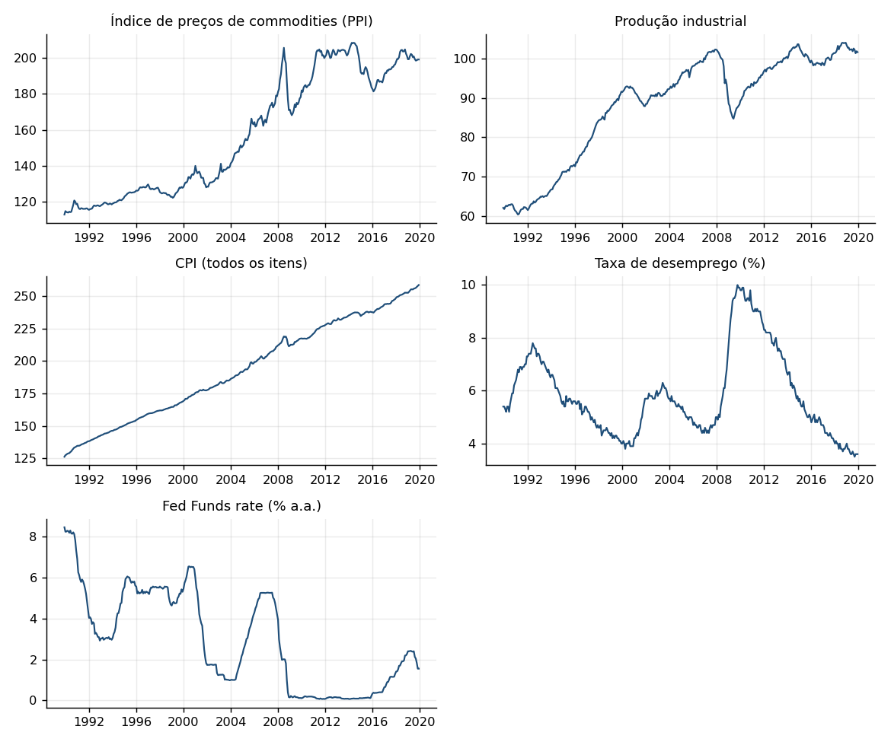
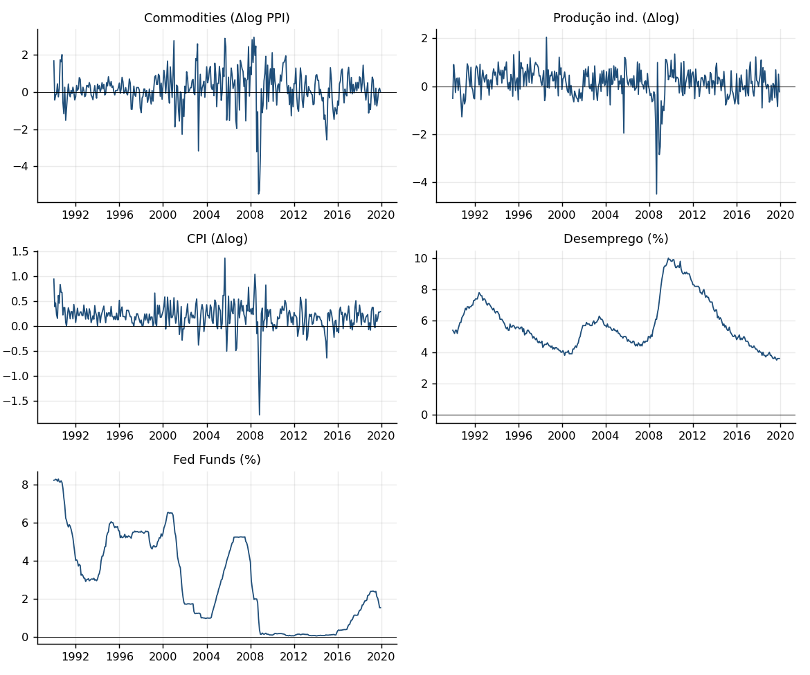
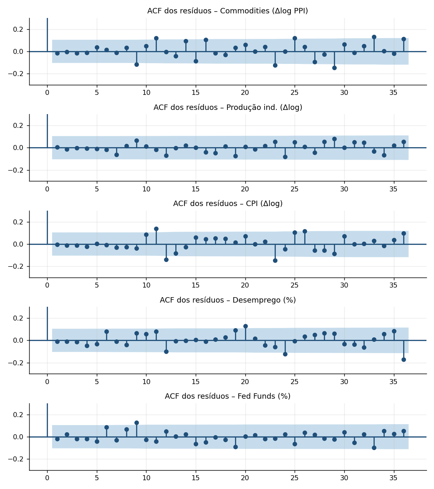
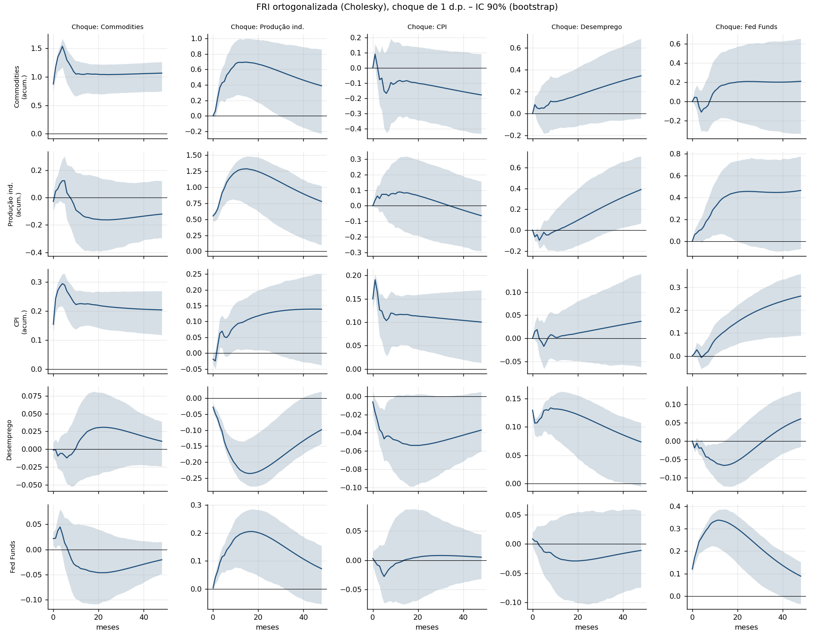
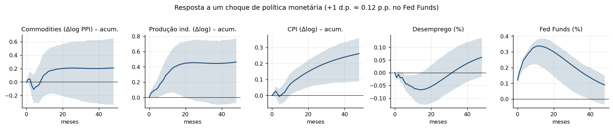
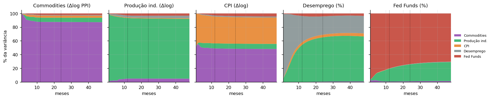
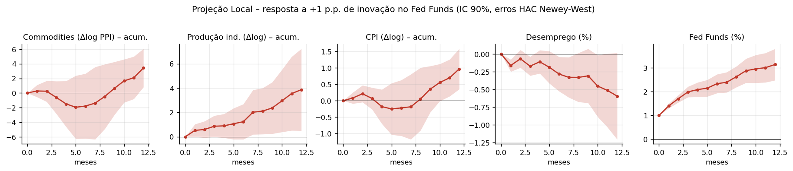
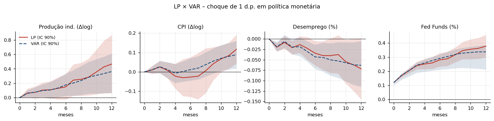

VAR e Projeção Local: política monetária nos EUA
Dados FRED, mensais, 1990-01 a 2019-12 (360 observações) · Python (statsmodels)
A. Fase preparatória
1) Motivação. Estudo o canal de transmissão da política monetária americana com cinco variáveis mensais: preço de commodities (PPI, que sinaliza inflação futura e ajuda a evitar o price puzzle), produção industrial (atividade), CPI (inflação), taxa de desemprego e Fed Funds (instrumento). A relação conjunta vem da regra de Taylor, $i_t=r^*+\pi_t+\phi_\pi(\pi_t-\pi^*)+\phi_y\tilde y_t$: o Fed reage a inflação e atividade, e juros afetam atividade, desemprego e preços com defasagem. A amostra 1990–2019 evita a restrição de juro zero (2009–15) e a pandemia, que quebrariam a linearidade do modelo.
2) Séries originais.

3) Ajustes. Commodities, produção industrial e CPI foram logaritmizadas e diferenciadas ($100\,\Delta\ln x_t$, variação % mensal), pois são claramente tendenciais. Desemprego e Fed Funds ficam em nível: são limitadas e persistentes, e diferenciá-las descartaria informação sobre longo prazo. As séries do FRED usadas como CPIAUCSL e INDPRO já são dessazonalizadas.
| Série | ADF (p-valor) H0: raiz unitária | KPSS (p-valor) H0: estacionária |
|---|---|---|
| Commodities | 0,000 | 0,100 |
| Prod. industrial | 0,000 | 0,100 |
| CPI | 0,000 | 0,014 |
| Desemprego | 0,135 | 0,100 |
| Fed Funds | 0,015 | 0,010 |
O ADF rejeita raiz unitária para quase todas, exceto desemprego (p=0,14); o KPSS não rejeita estacionariedade para desemprego e rejeita para Fed Funds e CPI (alta persistência). Mantenho níveis para desemprego e juros e noto que as raízes do VAR ficam próximas de 1 (maior módulo 0,985), o que é típico e aceitável para FRI com bandas por bootstrap.

B. VAR em forma reduzida
4) Defasagens e restrições. Estimo $y_t=c+\sum_{k=1}^{p}A_k y_{t-k}+u_t$, $u_t\sim(0,\Sigma_u)$, com $y_t=(\Delta p^{com},\Delta ip,\Delta cpi,ur,ffr)'$. Escolhi $p$ por critérios de informação até 12 defasagens (AIC e FPE → 6; BIC e HQ → 2) combinados à exigência de resíduos brancos: com $p=2$ restam autocorrelações; com $p=6$ os testes de Ljung-Box não rejeitam em nenhuma equação. Fiquei com $p=6$.
| p | AIC | BIC | HQ |
|---|---|---|---|
| 1 | -12,608 | -12,276 | -12,476 |
| 2 | -13,167 | -12,558 | -12,925 |
| 3 | -13,158 | -12,273 | -12,806 |
| 4 | -13,189 | -12,026 | -12,726 |
| 5 | -13,231 | -11,792 | -12,658 |
| 6 | -13,248 | -11,533 | -12,565 |
| 7 | -13,225 | -11,232 | -12,431 |
| 8 | -13,144 | -10,875 | -12,241 |
| 12 | -13,115 | -9,739 | -11,771 |
Não impus restrições na forma reduzida: todas as variáveis são domésticas (EUA), então todos os choques podem afetar todas as variáveis; a parcimônia vem apenas da escolha de $p$. O modelo é estável (maior raiz da companion = 0,985 < 1).
5) Qualidade do ajuste.

| Equação | Ljung-Box, 12 lags (p) | Ljung-Box, 24 lags (p) |
|---|---|---|
| Commodities | 0,420 | 0,136 |
| Prod. industrial | 0,944 | 0,968 |
| CPI | 0,114 | 0,057 |
| Desemprego | 0,371 | 0,164 |
| Fed Funds | 0,326 | 0,706 |
Ressalvas. Os resíduos de cada equação são brancos a 5% (o CPI fica no limite com 24 lags, p=0,057), mas o teste portmanteau multivariado rejeita (p=0,0018) e a normalidade é fortemente rejeitada (caudas pesadas, crises). Por isso as bandas vêm de bootstrap de resíduos e não de fórmulas assintóticas gaussianas.
C. Análise estrutural
6) Restrições. Identificação recursiva (Cholesky): $\Sigma_u=PP'$ com $P$ triangular inferior e $u_t=P\varepsilon_t$, $\varepsilon_t\sim(0,I)$. A ordem é $(\Delta p^{com},\Delta ip,\Delta cpi,ur,ffr)$. Isso impõe que: (i) commodities não reagem contemporaneamente a nada (preços de mercado, fortemente exógenos); (ii) atividade e preços ao consumidor reagem apenas a commodities dentro do mês (preços e produção rígidos no curto prazo); (iii) o Fed Funds, por último, reage a todos dentro do mês (o Fed observa dados correntes) mas o choque monetário afeta as demais variáveis só com defasagem de um mês. Como todas as variáveis são americanas, não há zeros adicionais na forma reduzida.
7a) FRI. Resposta de cada variável a cada choque estrutural de 1 desvio-padrão, com IC 90% por bootstrap (bootstrap de resíduos, 1000 réplicas, percentis 5% e 95%). Para as variáveis em diferença mostro a resposta acumulada (nível do log, em pontos percentuais).


| Resposta ao choque monetário | h=0 | h=6 | h=12 | h=24 | h=48 |
|---|---|---|---|---|---|
| Commodities | 0,00 [0,00; 0,00] | -0,06 [-0,31; 0,21] | 0,15 [-0,18; 0,50] | 0,21 [-0,23; 0,60] | 0,21 [-0,34; 0,65] |
| Prod. industrial | 0,00 [0,00; 0,00] | 0,18 [0,02; 0,34] | 0,36 [0,07; 0,61] | 0,45 [-0,03; 0,75] | 0,46 [-0,07; 0,78] |
| CPI | 0,00 [0,00; 0,00] | 0,01 [-0,04; 0,07] | 0,09 [0,02; 0,16] | 0,17 [0,06; 0,25] | 0,26 [0,09; 0,36] |
| Desemprego | 0,00 [0,00; 0,00] | -0,04 [-0,07; -0,01] | -0,06 [-0,11; -0,00] | -0,04 [-0,11; 0,05] | 0,06 [-0,02; 0,14] |
| Fed Funds | 0,12 [0,10; 0,13] | 0,29 [0,21; 0,32] | 0,34 [0,21; 0,39] | 0,27 [0,11; 0,33] | 0,09 [-0,04; 0,15] |
7b) Interpretação.
- Choque monetário (Fed Funds): o juro sobe 0,12 p.p. no impacto e chega a cerca de 0,34 p.p. após ~12 meses (persistência típica da regra de juros com suavização), voltando lentamente.
- Desemprego: cai ligeiramente (até -0,067 p.p. em ~14 meses, significativo a 90%) – sinal oposto ao previsto pela teoria; só em horizontes longos a resposta se aproxima de zero/positiva, sem significância. Produção industrial acumulada sobe e fica positiva. CPI sobe de forma lenta (price puzzle brando).
- Diagnóstico: o choque recursivo mensal capta em grande parte antecipação do Fed a informação que o modelo não observa (expectativas de inflação/atividade): o Fed sobe juros porque prevê aquecimento, e o VAR atribui isso ao "choque". Incluir commodities atenuou o puzzle mas não o eliminou. Resultado típico de identificação puramente recursiva; seria preciso choques narrativos (Romer-Romer) ou de alta frequência para limpar a identificação.
- Outros choques: choques de commodities elevam o CPI de forma persistente (repasse de custos), sem reação relevante do Fed Funds; choques de produção industrial reduzem o desemprego e elevam o Fed Funds (reação endógena da política à atividade).
8) FEVD. Percentual da variância do erro de previsão de cada variável (linhas) atribuído a cada choque (colunas), em 12, 24 e 48 meses (1, 2 e 4 anos).
1 ano
| Variável \ choque | Commodities | Prod. industrial | CPI | Desemprego | Fed Funds |
|---|---|---|---|---|---|
| Commodities | 87,6 | 6,2 | 3,0 | 0,8 | 2,3 |
| Prod. industrial | 5,0 | 88,4 | 0,8 | 2,8 | 3,0 |
| CPI | 49,0 | 7,4 | 39,0 | 1,5 | 3,1 |
| Desemprego | 0,1 | 53,9 | 3,9 | 38,4 | 3,8 |
| Fed Funds | 0,8 | 18,6 | 0,2 | 0,2 | 80,2 |
2 anos
| Variável \ choque | Commodities | Prod. industrial | CPI | Desemprego | Fed Funds |
|---|---|---|---|---|---|
| Commodities | 87,5 | 6,2 | 3,0 | 0,9 | 2,4 |
| Prod. industrial | 5,0 | 87,6 | 0,9 | 3,1 | 3,4 |
| CPI | 48,5 | 7,4 | 38,6 | 1,5 | 4,0 |
| Desemprego | 0,7 | 64,4 | 3,8 | 26,8 | 4,3 |
| Fed Funds | 1,1 | 24,5 | 0,1 | 0,4 | 73,9 |
4 anos
| Variável \ choque | Commodities | Prod. industrial | CPI | Desemprego | Fed Funds |
|---|---|---|---|---|---|
| Commodities | 87,2 | 6,4 | 3,1 | 1,0 | 2,4 |
| Prod. industrial | 4,9 | 87,1 | 1,0 | 3,7 | 3,3 |
| CPI | 48,2 | 7,4 | 38,4 | 1,5 | 4,5 |
| Desemprego | 0,9 | 65,5 | 4,4 | 25,4 | 3,7 |
| Fed Funds | 1,5 | 27,6 | 0,1 | 0,5 | 70,3 |

Comentários. (i) Commodities, produção e CPI são dominados por choques próprios no curto prazo; o CPI deve cerca de 49% da variância aos choques de commodities. (ii) O desemprego é explicado majoritariamente por choques de produção industrial (54% em 1 ano → 65% em 4 anos), compatível com a lei de Okun. (iii) O choque monetário explica pouco da variação das demais variáveis (nunca passa de ~5%, ex.: 4,5% do CPI em 4 anos): a maior parte da variação do juro é sistemática (resposta endógena), não choque. (iv) O Fed Funds é explicado por seu próprio choque (de 80% a 70%) e, com o horizonte, pelos choques de produção (19% → 28%), coerente com a regra de Taylor.
D. Projeção local
9) Estimação e identificação. A variável mais endógena do sistema é o Fed Funds (última na ordem, reage contemporaneamente a todas). Para cada horizonte $h=0,\dots,12$ estimo (Jordà, 2005) $$y_{i,t+h}-y_{i,t-1}\;(\text{ou } y_{i,t+h}\text{ para } ur,ffr)=\alpha_h+\beta_h\,ffr_t+\gamma_h'\,w_t+\sum_{k=1}^{6}\delta_{h,k}'\,y_{t-k}+e_{t+h}^{(h)},\quad w_t=(\Delta p^{com}_t,\Delta ip_t,\Delta cpi_t,ur_t)',$$ e $\beta_h$ é a FRI a uma inovação de +1 p.p. no Fed Funds. Estratégia de identificação: a mesma recursividade do VAR: controlar pelos valores contemporâneos das variáveis ordenadas antes do juro e por 6 defasagens de todas as variáveis faz $ffr_t$ ser, condicionalmente, a inovação monetária (ortogonal ao conjunto de informação do Fed no mês). Por construção, o efeito contemporâneo ($h=0$) nas demais variáveis é zero e no próprio juro é 1. As variáveis em diferença entram como variação acumulada do log entre $t-1$ e $t+h$, comparável à FRI acumulada.
10) Resultado. IC 90% = $\hat\beta_h\pm1{,}645\,\widehat{se}$ com erros HAC de Newey-West ($h+1$ defasagens), robustos a heterocedasticidade e à autocorrelação MA($h$) induzida pelos resíduos sobrepostos.

| Resposta (p.p.) | h=0 | h=1 | h=3 | h=6 | h=9 | h=12 |
|---|---|---|---|---|---|---|
| Commodities | 0,00 [0,00; 0,00] | 0,28 [-0,55; 1,11] | -0,61 [-2,86; 1,63] | -1,78 [-6,22; 2,66] | 0,64 [-2,98; 4,26] | 3,42 [0,80; 6,05] |
| Prod. industrial | 0,00 [0,00; 0,00] | 0,52 [0,00; 1,03] | 0,86 [-0,01; 1,74] | 1,24 [-0,21; 2,68] | 2,37 [0,25; 4,50] | 3,87 [0,50; 7,23] |
| CPI | 0,00 [0,00; 0,00] | 0,08 [-0,09; 0,25] | 0,07 [-0,27; 0,40] | -0,22 [-1,07; 0,63] | 0,35 [-0,35; 1,06] | 0,97 [0,35; 1,58] |
| Desemprego | 0,00 [0,00; 0,00] | -0,16 [-0,25; -0,08] | -0,17 [-0,31; -0,04] | -0,28 [-0,53; -0,04] | -0,31 [-0,69; 0,07] | -0,59 [-1,20; 0,01] |
| Fed Funds | 1,00 [1,00; 1,00] | 1,40 [1,30; 1,50] | 1,99 [1,77; 2,21] | 2,33 [1,94; 2,73] | 2,88 [2,37; 3,38] | 3,14 [2,48; 3,80] |

Leitura. O Fed Funds permanece elevado ~3 p.p. um ano depois de uma inovação de 1 p.p. (persistência). O desemprego cai de forma significativa nos primeiros meses (−0,16 a −0,28 p.p.) e a produção industrial acumula alta; o CPI primeiro cai (sem significância) e depois sobe (+0,97 p.p. em 12 meses, significativo). Ou seja, a LP reproduz os mesmos puzzles do VAR: sinal de que o problema é de identificação, não de método. A LP tem a vantagem de ser robusta a má especificação da dinâmica e à ordem do VAR, a custo de maior variância.
Código e reprodução
VAR, FRI e FEVD
lags = pd.concat([d.shift(k).add_suffix(f"_L{k}") for k in range(1, 7)], axis=1)
res = VAR(d).fit(6) # VAR(6), constante
irf = res.irf(48) # FRI ortogonalizada (Cholesky)
fe = res.fevd(48).decomp # FEVD: (variavel, horizonte, choque)
# IC 90%: bootstrap de residuos (1000 replicas), percentis 5% e 95%Projeção local
def lp(yname, H):
for h in range(H + 1):
y = # nivel acumulado p/ variaveis em diferenca
X = [ffr_t, dlppi_t, dlip_t, dlcpi_t, ur_t, 6 lags de todas, const]
r = sm.OLS(y, X).fit(cov_type="HAC", cov_kwds={"maxlags": h + 1})
beta_h, se_h = r.params["ffr"], r.bse["ffr"] # IC 90%: beta +- 1,645 se Código completo: analise.py (baixa os dados do FRED, estima tudo, salva figuras e resultados.json) e build_html.py (gera esta página). Para reproduzir: python analise.py && python build_html.py.
Dados: FRED, Federal Reserve Bank of St. Louis. Séries: PPIACO, INDPRO, CPIAUCSL, UNRATE, FEDFUNDS.